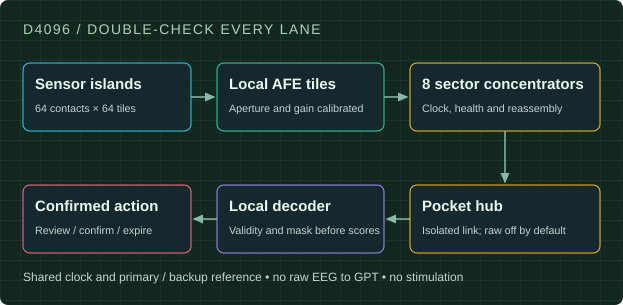

D4096 — dense scalp EEG research track
Revision 0.2 · November 2026 · Design, simulation, and secondary public-data analysis. No Rexzen 4,096-channel hardware or human measurements. Not ready to manufacture or connect to a human.
1. What “4,096” means
Build to 4,096 separate, non-penetrating scalp measurement electrodes; 4,096 independently acquired, time-aligned lanes; one native sample per lane per tick. One primary and one backup reference, a common-mode/body-bias electrode, and optional ocular/muscle/IMU channels are extra and not in the headline count. A switch matrix that sees only a subset at a time, averages of nearby pads, or outputs inferred by a model do not meet the requirement. Simultaneity means aligned sample aperture and calibrated group delay, not merely a shared timestamp. Report the three counts separately: physical sites, captured lanes, and quality-valid sites per time window. Require all lanes wired, and at least 4,000 usable (97.66%) in any window advertised as full-density operation. Two lost tiles are enough to invalidate the dense mode. Smaller modes, if retained for R&D, must be explicitly named and cannot satisfy the 4,000 minimum.
Decision today: build the D4096 instrument as a research track alongside the public R0 cap.[7] Do not sell the first dense build as daily-wear hardware. It may require a serviced liner, a rear-to-pocket tether and stationary use. A daily version with all 4,096 lanes remains an engineering target, contingent on contact yield, thermal load and a measured task advantage. The topology and transport meet the count in software. Neither has been demonstrated on a human head.
2. Evidence and the test of “best”
| Comparator | What was demonstrated | Design implication |
|---|---|---|
| Schreiner et al., Scientific Reports | 256 channels, 8.6 mm inter-electrode distance in a targeted non-invasive central-sulcus mapping study.[8] | Start with the strongest task-matched density, not 16 channels as a straw man. |
| Schreiner et al., Communications Engineering, 2026 | 512 electrodes over the occipital region, 73% average visual-category accuracy with rLDA under that protocol. Four participants. They prepared and shaved scalps for this experiment.[1] | Region, preparation and task are part of the result. Do not copy their preparation in a consumer device or imply a wearable works through ordinary hair. |
| g.Pangolin + g.HIamp | Manufacturer advertised up to 1,024 synchronized channels in an archived product page dated 15 November 2026.[15] | A high count on external laboratory amplifiers is already available. Request hands-on access and verify all channels, montage, prep and throughput before a head-to-head claim. |
| 4,096-channel event-based CMOS array | 4,096 channels in an event-based microelectrode research array, digitizing changes in the pixels.[3] | Different electrodes, readout and application; not prior evidence of a dried, unshaved human scalp network or fixed-rate EEG. |
| Brain2Qwerty | MEG 29% versus EEG 65% mean character error when 35 volunteers actually typed; this was a typing experiment, not thought transcription.[5] | No scale conversion from electrode count to word rate. No parity or superiority claim against implants. |
Candidate success is incremental usable information after accounting for eye/muscle, superficial currents, partial shorts, motion, reference noise, electrical noise and geometry. A larger array can improve spatial sampling without yielding thousands of independent neural observations. Compare fixed-density versions under the same task, clocking, acquisition duration, cohort, reference and validation protocol. Relative performance on cap-only public reanalyses cannot establish SOTA. If the result saturates at 512 in intended use, do not claim benefit from deploying 4,096 in that use. Keep the full-count instrument for mapping only if it establishes a separate advantage.
3. What was run
Software loopback: 240 s of programmed samples; 480,000 packets; 245,760,000 signed values; 746,880,000 bytes encoded and reassembled without a clean-frame mismatch. Corruption, duplicate and wrong-time rejection and missing-tile validity checks passed separately. At 250 samples/s the planned payload is 24.576 Mb/s, 24.896 Mb/s including our packet wrappers before physical-link overhead (3.112 Mb/s per sector). Eight hours is 88.47 decimal GB raw or 89.63 GB with packet wrappers.
Real EEG, one prepared lab session: 80 trials for four visual categories; theoretical chance is 25%. Source: the archived author sample, one participant, not Rexzen D4096.[1][13]
| Selected EEG channels | Post-stim balanced accuracy | Range across 12 subsets (not CIs) | Pre-stim control |
|---|---|---|---|
| 32 | 43.3% | 31.9%–49.4% | 22.8% |
| 64 | 43.2% | 38.1%–49.8% | 24.2% |
| 128 | 42.8% | 29.8%–49.0% | 25.7% |
| 256 | 41.1% | 37.9%–48.7% | 25.7% |
| 512 | 42.3% | All recorded sites | 26.2% |
The 512-site shuffled-label mean was 25.9% (32 negative-control runs). This fixed reanalysis found no monotonic density advantage; the 512 result was within the ranges of the smaller subsets. It does not overturn the cohort result from the paper, establish equivalence, or justify extrapolating to 4,096. Different decoder, split and montage selection.
512-site reanalysis: exact author-published VisualStim S03 file; SHA-256 matched OSF, no raw EEG redistributed. The MATLAB file has EEG and distinct label/time rows; the latter are used only for trial alignment, not as classifier input.[1][13] The experiment compares nested random recorded-channel subsets (not alternate physical devices) on one session/participant, with a fixed linear model, time-block holdout and repeated-image filename exclusion. Do not compare its percentages directly to the paper's subject-average or claim it demonstrates cross-day transfer, fit, scalp source localization, mobile use or 4,096-channel efficacy.
4,096-lane replay: generated integer fixtures exercise actual software encoding, checksum, reverse tile arrival order, reassembly, signed extremes and checks of every sample. Explicit invalid masks distinguish missing channels from literal zero-valued samples. This is a deterministic in-memory host test. No analog front end, physical cable, cryptographic storage, power or person was tested.
4. Geometry and fit

| Modeled active patch | Initial min. center-to-center | Relaxed min. center-to-center | Relaxed median nearest center |
|---|---|---|---|
| 480 cm² | 2.986 mm | 3.240 mm | 3.301 mm |
| 520 cm² | 3.108 mm | 3.240 mm | 3.429 mm |
| 560 cm² | 3.225 mm | 3.240 mm | 3.552 mm |
The arithmetic baseline is a triangular 3.5 mm lattice occupying about 435 cm² before parts like joins, fluid barriers, facial exclusions and cap edges. A second, explicit all-channel surrogate starts with equal-area Fibonacci sites on a spherical patch (radius 96 mm). A bounded tangent relaxation moves sites by at most 0.45 mm to increase the minimum nearest-center distance. Coordinates, hierarchy and per-lane assignment are in electrode-map.csv; the visualization uses an equal-area projection. Partition projection recursively to eight contiguous-ish sectors of 512 sites, then eight local 64-lane tiles per sector. In this map, tile rotor/routing shape depends on region. An 8×8 lane address is a logical count, not a requirement to force a square grid onto the scalp. address = 512 × sector + 64 × tile_in_sector + lane.
The sphere is not a person or an anatomical fit proof. Initial 560 cm² variant is the reference. The smaller patches demonstrate only mathematical packing, not that a real small head has that usable surface. At D0 acquire unpowered scans/dummies that cover sizes, asymmetry, cap straps and eyewear; carve exclusions around ear, brow and hair transition; create a position/calibration file per liner size and lot. Use measured geodesic distance with actual edge reserve and tolerances, not just total surface area. Freeze one manufacturable sector only after checking trace exits and assign invariant logical IDs. Do not shrink the same outline proportionally if clearance or pressure fail.
Proposed contact stack: 1.90 ±0.05 mm inside-diameter contact coupon; individually isolated conductive hydrogel/protected Ag/AgCl candidate on a soft adhesive carrier, hydrophobic dielectric moat and relief path away from neighboring wells. No sharp tips, puncture, capillary wick between wells or shared gel film. Center-placement envelope initially ±0.15 mm each side; budget worst neighboring centers minus largest approved active footprint, both fabrication errors and hydrated spread. Allocate ≥0.9 mm electrical isolation clearance on the surrogate before mechanical/moisture qualification. If the hydrated footprint overruns the budget, prefer smaller localized plugs and package redesign, not pressure. Prototype low-force nonpenetrating compliant bridges only as an alternate cartridge; tiny area may create unacceptable impedance on dry hair.[10]
Do not confuse geometric coverage with contact yield. Separate load-bearing 3D spacer liner from contact membranes. Bind motion strain relief to the frame; float each sensing island against the carrier to avoid shearing skin. Independent wells are checked under sweat, cleaning chemistry, hair shafts and motion. Wet variant is for bench/approved lab study only. Candidate future normal-hair route: wearer-removable hair-parting spacer ribs at tile seams, distributed compliant pressure, or stable hairlike bioadhesive contacts; hairlike scalp electrodes have been described, but that does not show a quick 4,096-point fit.[9] Trial don/doff, public wear acceptability, pressure mapping, comfort and support access without requiring shaving, scalp abrasion or painful loading. In early mechanical exploration completely unpowered dummies come first. Avoid claiming photosensitivity-free experimental stimuli or safety because a device is “non-invasive.”
Worst-case failure planning: a whole 512-site sector dropout is not equivalent to scattered noise. Never spread good-neighbor scores to cover a shorted tile. Track valid contact by sector and contiguous holes, contact flags and verified reference state. Example target for early study: ≥4,000 valid sites in ≥90% of pre-specified seated windows for most eligible users, a per-sector minimum, and ≤2 minutes independent donning in a separate mature version. Report confidence bounds by size/hair condition and participants who cannot fit; do not silently exclude them from the headline denominator. Seated and moving criteria are separate.
5. Signal chain and precision budget

| Item | Rev target and architecture | Bench verification |
|---|---|---|
| Analog topology | 64 sensing channels per tile. Each electrode has its own high-input-impedance path, protection, gain, sample aperture and address. Keep unbuffered traces short (<15 mm design intent); do not bring thousands of high-Z traces to the belt. Quiet short local return, RF/trunk shield separated from sense routing, deterministic scan and guard policy. Synchronized local AFE with per-lane sample-and-hold and adequate settling or genuinely simultaneous converters. | Off-body impedance fixtures, switched resistor/capacitor emulator, guarding/ESD leakage over temperature and humidity; verify rail behavior and calibration across all tiles. No electrode common bus that merges channels. |
| Measurement quality | ≥1 GΩ magnitude at 10 Hz and ≥200 MΩ at 45 Hz at the integrated input, checked with real harness and ESD; ≤1.0 µV RMS per-lane electronics shorted, and ≤2.0 µV RMS AFE+defined phantom source in 0.5–45 Hz; separate high-band mode for 45–90 Hz with its own noise budget. Avoid quoting 24-bit output as ENOB. | Measure per-lane noise, DC offsets and drift, input bias/leakage, anti-alias with swept out-of-band tone, 50/60 Hz behavior. Report median, p95 and worst, each with real source impedance. Phase/group delay sweeps 1–90 Hz; external calibrated clocks. |
| Precision under interference | ≤0.5% inter-lane gain mismatch after calibration at 10 and 40 Hz; target ≥80 dB installed common-mode rejection at 50/60 Hz with a deliberately imbalanced source; adjacent electronic crosstalk ≤−70 dB at 10/40 Hz under fixture conditions. Skin/gel bridges are a separate phantom test. | Connect reusable one-hot microvolt fixture; inject one lane and all others terminated, assess lane-to-lane coupling. At 4,096 lanes test every input and worst-case neighbors; verify sensor and converter amplitude/full-scale including large electrode offsets and overload recovery. |
| Reference and actuator separation | Primary reference with local protected buffer and differential distribution; monitor independent backup continuously, do not silently hot-switch reference. Any change requires new acquisition epoch and time marked. One reviewed common-mode/body-bias path only; system-level fault/leakage budget includes every connectable surface and test circuit, not a rating multiplied blindly across channels. Optional independent EOG/EMG for study, never count them as brain sites. No stimulation. | Phantom reference-open, bias fault, leakage and startup/fault combinations; human-connection design signed off by qualified engineers and testing lab before a human safety study. Diagnostic excitation only if independently approved; do not energize 4,096 lead-off drives in parallel. |
| Synchronization | Common oscillator and frame sync, deterministic reset and gain/phase calibration; aperture and calibrated group-delay residual ≤10 µs across the cap as a target. 10 µs ≈0.324 degrees at 90 Hz. One global monotonic sample index plus a hardware epoch, tile identity, a timing fault indicator, and link-loss filters. | Fan out a known waveform and timing pulse to all tiles on a fixture; sweep frequency, rail, thermal and CPU/RF load. Detect counter slips and phase drift; quiesce stale inference after hot-unplug or map change. |
| Power and transport | Analog target ≤50 µW per channel as an assumed custom/matched AFE budget; total cap power target ≤0.45 W including aggregation. Body module for protected pack, raw storage and compute. Layered rigid-flex sectors; candidate short breakaway digital link, floating sensor island with tested isolation or optical data plus isolated power. No USB, charge or mains on the head. | Per-sector metering, thermal worst cases with sweat/insulation and radio; chargers physically and electrically interlocked and cannot operate while worn. Cap/cable topology must fail off after single faults. Confirm no snag hazards before on-body studies. |
Budget contrast. ADS1299 is an eight-channel simultaneous-conversion component, useful for a small bench measurement card.[4] Its typical normal-mode figure is 39 mW in the datasheet condition (analog supply 5 V, bias amp off).[12] Scaling to 512 packages gives ~20 W for converters alone. That rules out a direct wearable scale-up. Prove 32–64 channels off-body first with catalog references; shortlist lower-power AFE modules or commission a shuttle ASIC only after contact quality and incremental utility justify it. A custom front end budget of 0.205 W plus ~0.21 W logic/links yields ~0.415 W for the cap; add ~0.55 W remote compute/storage nominal and qualify the full system at a provisional battery-side 1.25 W ceiling. On a 15 Wh pack with 80% usable energy that implies 9.6 h modeled; no runtime or heat measured. Keep the pack in the pocket, not above the neck. Candidate daily headwear mass ≤180 g before body module retained as a measured usability gate, not a material estimate.
Noise arithmetic. sqrt(4 k T (R+R) B) with equal ideal resistor sources at 310 K and 44.5 Hz noise bandwidth gives ~0.39, 0.68 and 1.23 µV RMS for 100 kΩ, 300 kΩ and 1 MΩ per side. Adding 1 µV RMS electronics in quadrature gives ~1.07, 1.21 and 1.59 µV RMS. This is a thermal-noise model, not a real scalp prediction. Polarization, preamp current noise, reference/admittance, non-white skin interface noise and mechanical artifact are not in it. Use measured impedance and stability/noise; a low reading may be a gel bridge. Estimate bridge signature on an independent phantom at crossed spacings and hydration; a high correlation alone cannot distinguish bridging from a real common field.
6. Data path, model and consent
Framing: fixed 250 samples/s baseline; 500 only on validated links if needed. Interleaved signed little-endian 24-bit; eight samples × 64 lanes per packet; test header contains magic, version, tile ID, first sample index and payload length plus IEEE CRC-32. CRC detects corruption; it is not authentication. Packet stream includes 32 ms blocks, 64 tile packets per block and a separate health sideband. Eight 10 Mb/s-class sectors are candidates, with a ≥100 Mb/s-class trunk (throughput verified including real protocol, line code and bursts). An 8-sample tile packet does not fit under standard Ethernet MTU with transport overhead; if the external link is IP, segment and reassemble explicitly below the negotiated MTU. Local raw recording only, optional and encrypted, with segmented file integrity, signed map/firmware, loss-aware validity and a device-specific key. Packet labels/source IDs are versioned; hold data in a short volatile ring when recording is off. At 250 sps reserve ≥128 GB usable for a full 8-hour raw research session with disk reserve; confirm encryption headroom and decide if 256 GB is needed for 500 sps. Phone summary link is rate-limited and carries fit diagnostics and consented intent, never the full raw 4k stream. No wireless “4k” claim from previews.
Decoder scale-up: hierarchical causal graph/temporal net: per-tile temporal kernels over only QA-passing rows → 64 tile tokens and regional summaries → masked graph or small transformer with neighboring tile and geometry edges → per-task calibrated candidate and abstention. Direct global attention over 4,096 raw sites is not the first iteration. Compare spatially local CSD/beamformer features and regularized linear/covariance models under the same montage subsets and data budget. Track verified electrode locations, bridge masks and reference changes. For source-localization benchmarks use individual anatomic models and known phantom ground truth; compare blind source location error with uncertainty and conductivity perturbations. For BCI, test physical real-density data plus dense-subset thinning, random layout replicates, tile-hole stress and cold-start days. Ablate: no high-density channels, no learned mask, and nuisance-only (EOG, EMG, IMU, position, timing) controls. If dependent on leaked neuromuscular cues label it accordingly, not EEG-only.
Intent and speech: acquisition is physical-switch controlled. Preserve R0's arm, explicit review, confirmation and expiry. Use app for settings and consent; optional GPT receives approved text only and never raw waveforms, neural embeddings or control authority. Earphones are an independent audio path; do not read content aloud if a private route isn't available. Current software is a data model and analysis, not trained real-time firmware. Long sentences remain a separate research effort. It needs cross-day and unseen prompt-family testing with shuffled, disconnected, cue-only, muscle/microphone-only and language-model-only controls. No unapproved competitive-game control, autonomous motion or safety-critical use.
7. Stop gates and manufacturing sequence
| Gate | What must exist | Pass / hold |
|---|---|---|
| D0 — contacts on fixtures | Unpowered headforms, 64-contact coupon, dry/semi-dry variants, haptic and wet bridging fixtures, independently reviewed risk/fit plans | Do not build population-specific tooling if any face exclusion, pocket isolation, skin-material, temperature or tolerancing issue is unresolved. Do not use a human as a continuity tester. |
| D1 — 512 on phantom | 8 tiles across at least two routing/fit regions, calibrated timing board, one-hot signal injection, realistic head phantom with ground-truth internal sources; established multi-layer phantoms provide a starting point.[11] | Verify electrode mapping, leakage and single-fault shutdown, analog performance and spatial reconstruction comparators. No human acquisition before independent electrical, materials and thermal signoff and ethics approval. |
| D2 — full 4,096 build | 64 tiles, verified clock and isolated recording, real 8 h continuous fixture test, digest, sample-loss and corruption telemetry, fault logging and no unsafe heat | Show all lanes individually and reject failed windows; no hidden fallback. Off-body validation first. Unit engineering targets: no silent sample loss, no dropout hidden by DSP; third-party approval for applicable physical safety requirements. |
| D3 — matched human study | Approved randomized paired study against validated 128/256/512 (and 1,024 if accessible), own 4,096 and held-out whole sessions, include multiple size/hair strata; power calculation fixed before confirmatory analysis | For a task-level leadership claim, propose ≥5 percentage points on paired accuracy with lower 95% bound >0 at matched false proposals/coverage; confirm held-out days and independent replication. Also compare utility to switch/touch. For spatial claims use blinded phantom mm errors and replication; never infer mm neural resolution from site pitch. |
| D4 — ordinary wear | Separately approved comfort, setup, fit, charge, EMC, cleaning, battery/transport, quality management, repair/validation and human-factors studies | No marketing as daily, SOTA or for medical use without evidence supporting the corresponding claim. Keep independent heads-up off control, no hidden neural logging. Stop if gain does not cover setup, operating effort or failure rate. |
Investor / manufacturing posture: the defensible innovation is the joint contact fit, synchronized dense channel fabric, and verifiable coverage contract—not the raw number of sensors, clinical uptake, thought reading or an IP claim. Outsource analog safety, human factors, cap molding, and ASIC design review to specialists. Reuse available 256/512 systems and benchmark data, including the existing 128-channel SMR BCI corpus for method checks.[2] Spend first on contact and phantom experiments with serial traceability and the matched benchmark; do not commit to volumes or ASIC mask sets before knowing how much the dense system adds. This release provides a modeled instrument and executable checks, not final schematics/Gerbers, certified CAD, or a manufacturing release.
Sources
- [1] Increasing EEG electrode density improves decoding of visual categories and source localization (2026)
- [2] High-density scalp EEG during sensorimotor rhythm-based BCI (2023)
- [3] 4096-channel event-based multielectrode array (2024)
- [4] Texas Instruments ADS1299 product specifications
- [5] Brain2Qwerty: noninvasive decoding of typed sentences (2026)
- [7] Rexzen Neural R0 research release
- [8] Mapping the central sulcus using non-invasive ultra-high-density brain recordings (2024)
- [9] Stick-and-play bioadhesive hairlike electrodes (2025)
- [10] Review of bioelectric signal electrode systems (2025)
- [11] Head phantoms for bioelectromagnetic applications (2020)
- [12] TI ADS1299 Rev C data sheet
- [13] Schreiner et al.: OSF published sample metadata, VisualStim S03
- [15] g.tec g.Pangolin research system, archived 15 November 2026 (manufacturer claim)